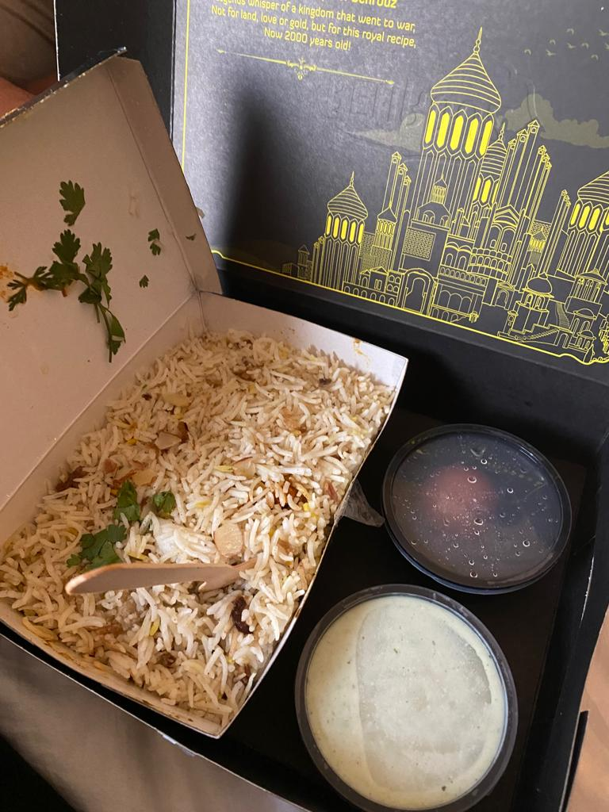

This is a chicken and rice dish made with a ton of spices and chicken marined in yogurt and spices. In my hometown of Hyderabad, the Hyderabadi Dum Biryani is a specialty. This can be made with lamb, mutton or chicken meat. I prefer the chicken one, but all others are very delicious too. This is a must try dish if anyone ever travels to Hyderabad.

2. Dosa:
This is traditionally a South Indian breakfast dish. This is like a crepe or a pancake. It is essentially made with a rice batter and is supposed to be a savory dish. It is usually eaten with sambar (a lentil soup) or coconut chutney.
3. Pani Puri:
This is typically a street food staple in India. It varies based on the region you taste, but it is generally meant to be savory. It is essentially a fried batter of semolina formed into balls. This is the called the 'puri'. It is eaten with a potato/chickpea curry and dipped in a sweet/minty soup. This dish can also be replicated at home, but the street vendors make this dish very tasty.
4. Pav Bhaji:
This is also a street food staple. It has its roots in North India, but it is very popular in South India too. It is essentially a toasted slider bun dipped in a very fragrant potato mash curry. The buns are called 'pav' and the curry is called the 'bhaji'. It is optionally garnished with diced onions and lemon juice.